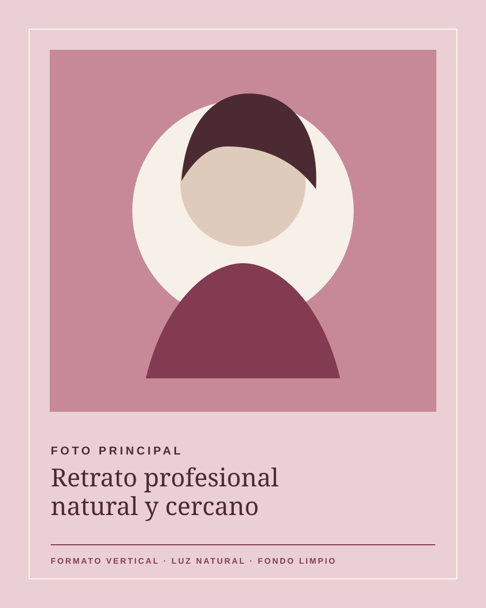
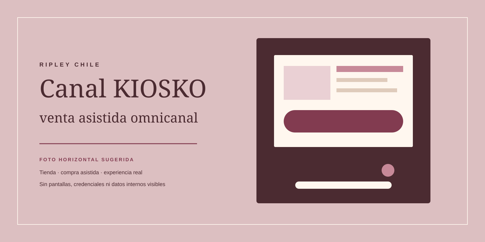
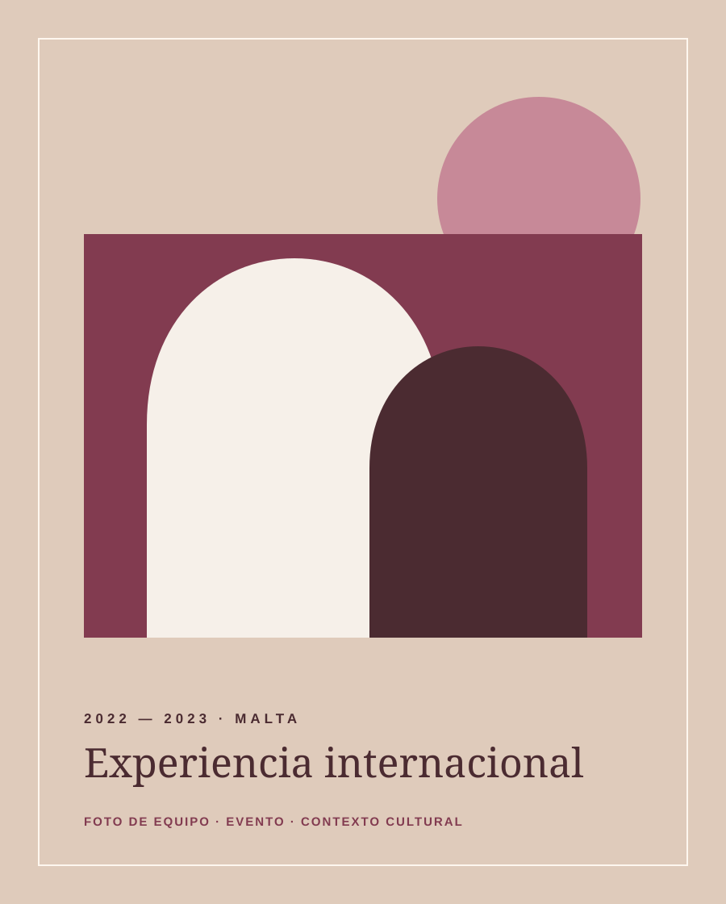
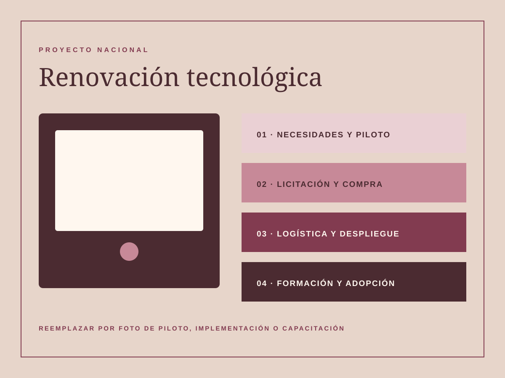
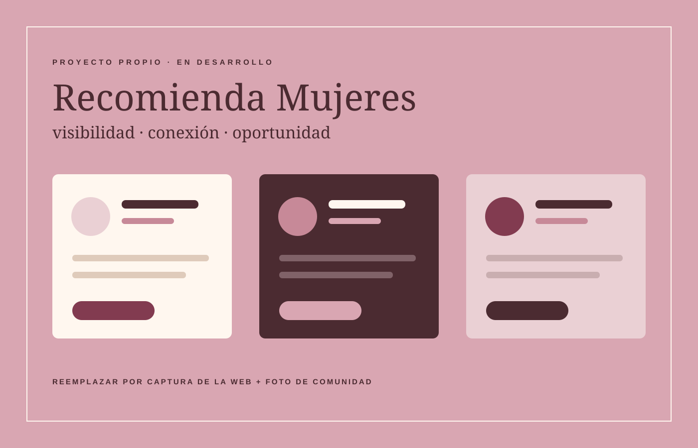
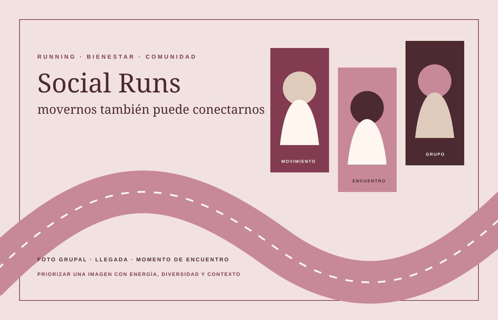
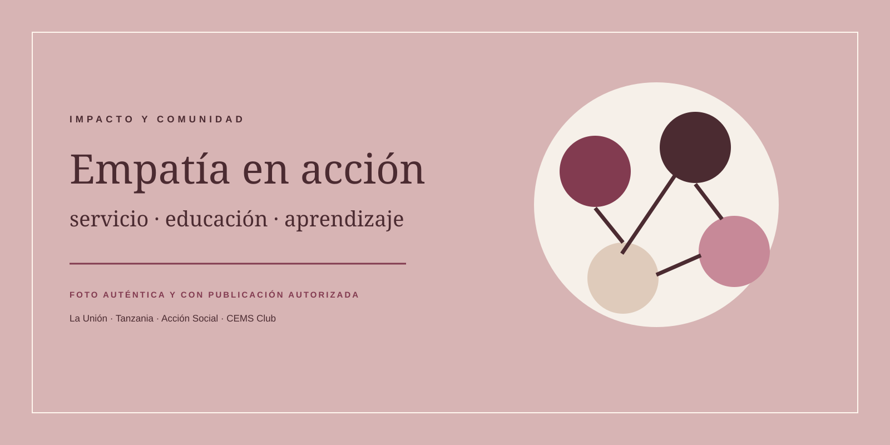
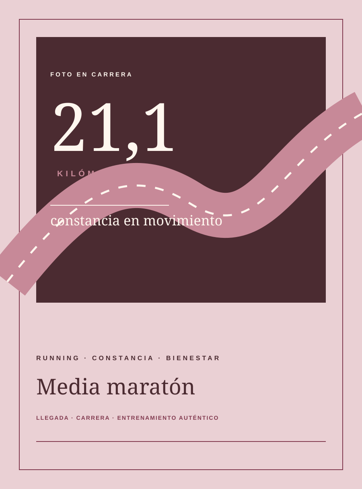

Entender antes de actuar
Escuchar a clientes, colaboradores y equipos para convertir necesidades reales en decisiones claras.
PROYECTOS · PRODUCTO · CRECIMIENTO
Soy Verónica Torrejón, Magíster CEMS en Administración Internacional e Ingeniera Comercial. Lidero proyectos que combinan crecimiento comercial, transformación digital, ejecución operacional y experiencia de cliente.

Una imagen cercana, luminosa y auténtica para abrir la conversación.
Mi mirada
UNA PROFESIONAL, UNA PERSONA COMPLETA
Creo que detrás de cada resultado hay una forma de mirar, relacionarse, aprender y hacerse cargo. Por eso este espacio reúne mi trayectoria profesional con los proyectos sociales, experiencias internacionales e intereses que también explican quién soy.
Escuchar a clientes, colaboradores y equipos para convertir necesidades reales en decisiones claras.
Alinear negocio, tecnología y operación para transformar una idea en una solución implementada.
Buscar resultados comerciales sin perder de vista la experiencia de las personas y el impacto generado.
MI FORMA DE TRABAJAR
Necesidad, personas y contexto.
Datos y problemas en una dirección clara.
Equipos, prioridades y decisiones.
Del caso de negocio a la operación.
Medir, ajustar y seguir creciendo.
02 · TRAYECTORIA
Mi recorrido combina gestión comercial, producto, operaciones, proyectos corporativos y contextos multiculturales.
RIPLEY CHILE
dic. 2023 — ago. 2026
2 años 9 meses
Durante toda mi trayectoria en Ripley tuve responsabilidad sobre el Canal KIOSKO: un canal de venta asistida omnicanal presente en tiendas, conectado con el surtido de ripley.com y con alternativas de despacho a domicilio o retiro en tienda.

Foto sugerida: KIOSKO en contexto, idealmente con la experiencia de compra asistida y sin información interna visible.
enero — agosto 2026 · 8 meses
Lideré iniciativas nacionales y corporativas con alcance en Chile y Perú, además de asesorar proyectos en Perú.
julio 2024 — enero 2026 · 1 año 7 meses
Impulsé el crecimiento del canal, su continuidad operacional y mejoras tecnológicas orientadas a ventas y experiencia.
diciembre 2023 — julio 2024 · 8 meses
Gestioné y potencié las ventas del canal en Chile para negocio propio 1P y Marketplace 3P.

2022 — 2023 · MALTA
Services Coordinator & Activity Leader
Coordiné servicios y programas para miles de clientes internacionales, trabajé íntegramente en inglés y organicé eventos de más de 200 participantes.
Resultado: diseñé un plan de marketing digital que aumentó el alcance en 40%.
2021 · CHILE
People Business Partner HR · Práctica profesional
Apoyé estrategias de personas para dos gerencias de soporte y operaciones, colaborando en cultura, selección, inducción, capacitación y mejora continua.
Proyecto: diseñé el primer manual corporativo para líderes.
03 · PROYECTOS SELECCIONADOS
Cada caso muestra el contexto, mi contribución y el resultado, combinando experiencia corporativa con iniciativas propias.
RIPLEY CHILE
Impulso y consolidación de un canal de venta asistida que conecta las tiendas físicas con el surtido disponible en ripley.com.

RIPLEY CHILE
Lideré el proceso completo: evaluación de necesidades por sucursal, piloto, licitación, compra, coordinación logística, entrega, implementación y capacitación.
Potenció las ventas, minimizó incidencias y redujo el tiempo de atención por transacción.
RIPLEY
Construí casos de negocio, presenté necesidades ante varias gerencias y trabajé junto a Product Owners y Tecnología para priorizar y habilitar cambios.
Proyectos articulados desde la perspectiva del negocio central, conectando múltiples áreas.
RIPLEY CHILE
Lideré capacitaciones, campañas y gestiones operacionales para habilitar nuevas alternativas de pago en el Canal KIOSKO.
Un proceso de compra más simple y una mejor experiencia para colaboradores y clientes.

RECOMIENDA MUJERES
Estoy creando una plataforma para descubrir y recomendar mujeres profesionales, independientes, emprendedoras y proyectos liderados por mujeres.
Surge desde la convicción de que ampliar la visibilidad, las redes y la autonomía económica puede aportar —como un granito de arena— a reducir brechas y formas de violencia de género en distintos ámbitos.

INICIATIVA PERSONAL
Como runner y participante de varias medias maratones, he convertido parte de esa experiencia en espacios para movernos, conectar y promover la vida sana.
04 · IMPACTO Y COMUNIDAD
Desde antes de comenzar mi carrera profesional he creado, coordinado y participado en iniciativas educativas y comunitarias. Son experiencias que me enseñaron a trabajar con realidades distintas, movilizar personas y convertir la empatía en acción.

Foto sugerida: una escena auténtica de La Unión, Tanzania o una iniciativa universitaria, siempre con autorización.
05 · FORMACIÓN Y PERSPECTIVA
Formación académica, experiencias internacionales y herramientas que complementan mi manera de abordar los desafíos.
MAGÍSTER
Universidad Adolfo Ibáñez, Santiago · ESADE Business School, Barcelona
PREGRADO
Universidad Adolfo Ibáñez · Distinción de Honor · Track de honor · Intercambio en University of Münster, Alemania
IDIOMAS
HERRAMIENTAS
RECONOCIMIENTOS
06 · MÁS ALLÁ DEL CARGO
El running, los viajes, las culturas, el emprendimiento y las conversaciones sobre sostenibilidad e inclusión no compiten con mi identidad profesional: la enriquecen.

Foto sugerida: una media maratón, llegada o entrenamiento que se sienta auténtico.
He corrido varias medias maratones. En esa práctica encuentro constancia, bienestar y una forma muy concreta de comprobar que avanzar también es sostener el proceso.
Me interesa conocer nuevas realidades, salir de lo conocido y crear espacios donde las personas puedan encontrarse, compartir experiencias y construir algo juntas.
07 · CONTACTO
Si quieres conversar sobre proyectos, producto, crecimiento, transformación digital, comunidad o una posible colaboración, estaré feliz de conectar.